Compute features and perform Machine Learning
In this example, we load a
SENTINEL imageand compute some features on this image :
Gaussian filters of RGB NIR bands
NDVI and NDVI filtered with Gaussian & Laplacian
Then, we load a
Field data tif imagethat contains the different classes (only two in our situation).We extract two numpy that are required in a random forest (with scikit)
We apply the model to the entire image
import rastereasy
1) Process sentinel image
1.1) Read image
name_im='./data/demo/sentinel.tif'
names = {"CO" : 1,"B": 2,"G":3,"R":4,"RE1":5,"RE2":6,"RE3":7,"NIR":8,"WA":9,"SWIR1":10,"SWIR2":11,"SWIR3":12}
image=rastereasy.Geoimage(name_im, names=names)
image.info()
image.colorcomp(bands=['R','G','B'], extent='pixel',title='original image')
- Size of the image:
- Rows (height): 1000
- Cols (width): 1000
- Bands: 12
- Spatial resolution: 10.0 meters / degree (depending on projection system)
- Central point latitude - longitude coordinates: (7.04099599, 38.39058840)
- Driver: GTiff
- Data type: int16
- Projection system: EPSG:32637
- Nodata: -32768.0
- Given names for spectral bands:
{'CO': 1, 'B': 2, 'G': 3, 'R': 4, 'RE1': 5, 'RE2': 6, 'RE3': 7, 'NIR': 8, 'WA': 9, 'SWIR1': 10, 'SWIR2': 11, 'SWIR3': 12}
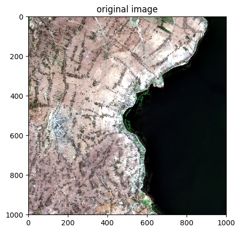
1.2) Extract R,G,B,NIR
rgbnir=image.select_bands(['R','G','B','NIR'])
rgbnir.info()
rgbnir.colorcomp(bands=['NIR','G','B'], title = 'color comp NIR image')
- Size of the image:
- Rows (height): 1000
- Cols (width): 1000
- Bands: 4
- Spatial resolution: 10.0 meters / degree (depending on projection system)
- Central point latitude - longitude coordinates: (7.04099599, 38.39058840)
- Driver: GTiff
- Data type: int16
- Projection system: EPSG:32637
- Nodata: -32768.0
- Given names for spectral bands:
{'R': 1, 'G': 2, 'B': 3, 'NIR': 4}
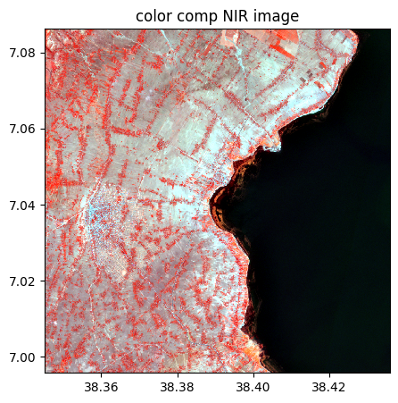
1.3) Compute gaussian filters with sigma=10 and sigma=20
# sigma = 10
rgbnir_10=rgbnir.filter(method="gaussian",sigma=10)
rgbnir_10.colorcomp(bands=['R','G','B'], title = 'Gaussian filter (10) on RGB image')
rgbnir_10.colorcomp(bands=['NIR','G','B'], title = 'Gaussian filter (10) on NIR-G-B image')
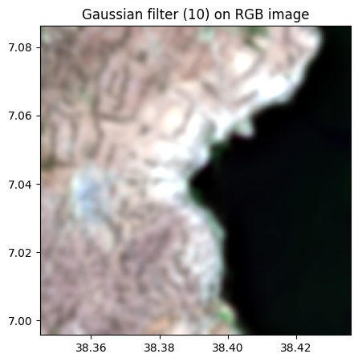
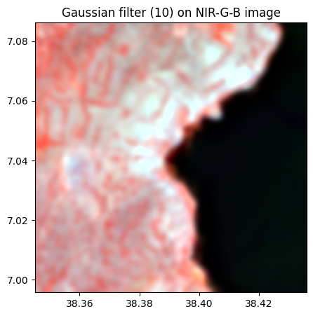
# sigma = 20
rgbnir_20=rgbnir.filter(method="gaussian",sigma=20)
rgbnir_20.colorcomp(bands=['R','G','B'], title = 'Gaussian filter (20) on RGB image')
rgbnir_20.colorcomp(bands=['NIR','G','B'], title = 'Gaussian filter (20) on NIR-G-B image')
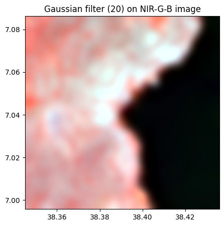
1.4) Compute NDVI and two filtered version (gaussian sigma=10 and sigma=20)
Extract R and NIR bands
r=rgbnir.select_bands('R')
nir=rgbnir.select_bands('NIR')
Compute and visu NDVI
ndvi=(nir-r)/(nir+r)
ndvi.visu(cmap='Greens', title="NDVI")
ndvi.info()
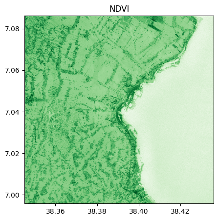
- Size of the image:
- Rows (height): 1000
- Cols (width): 1000
- Bands: 1
- Spatial resolution: 10.0 meters / degree (depending on projection system)
- Central point latitude - longitude coordinates: (7.04099599, 38.39058840)
- Driver: GTiff
- Data type: float64
- Projection system: EPSG:32637
- Nodata: nan
- Given names for spectral bands:
{'NIR': 1}
# As we can see, the name associated is the name of the 1st band involved in the operation
# For more consistency, we can change the name with :
ndvi.change_names({'NDVI':1})
ndvi.info()
- Size of the image:
- Rows (height): 1000
- Cols (width): 1000
- Bands: 1
- Spatial resolution: 10.0 meters / degree (depending on projection system)
- Central point latitude - longitude coordinates: (7.04099599, 38.39058840)
- Driver: GTiff
- Data type: float64
- Projection system: EPSG:32637
- Nodata: nan
- Given names for spectral bands:
{'NDVI': 1}
Gaussian filter of NDVI
# sigma = 10 and 20
ndvi_10=ndvi.filter(method="gaussian",sigma=10)
ndvi_20=ndvi.filter(method="gaussian",sigma=20)
ndvi_10.visu(cmap='Greens', title="NDVI (sigma=10)")
ndvi_20.visu(cmap='Greens', title="NDVI (sigma=20)")
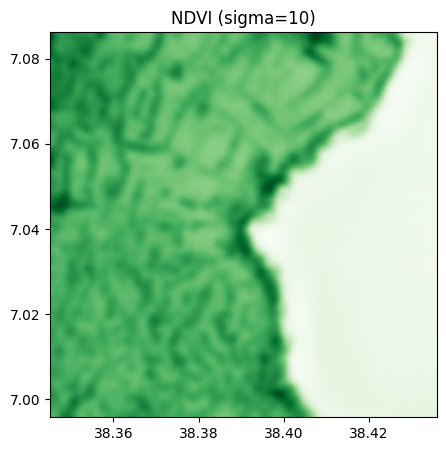
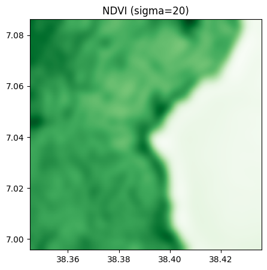
Laplacian filter of NDVI
laplace_1=ndvi.filter(method = 'laplace')
laplace_1.visu()
laplace_2=ndvi.filter(method = 'laplace', pre_smooth_sigma=10)
laplace_2.visu()
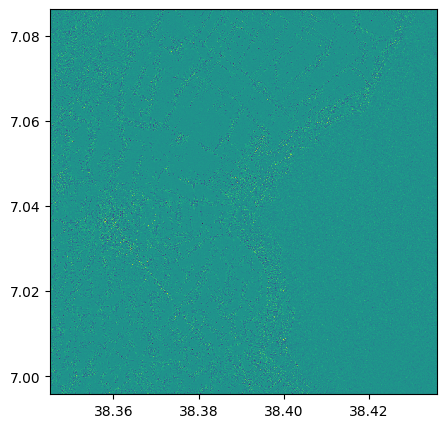
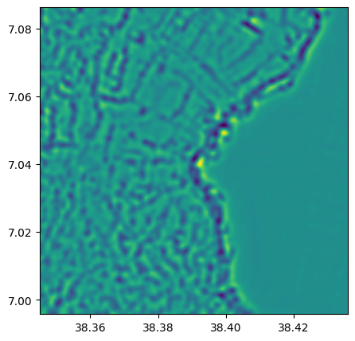
2) Stack all features
We can now stack all features, in rgbnir, rgbnir_10, rgbnir_20, ndvi, ndvi_10, ndvi_20, laplace_1, laplace_2
im_features=rgbnir.stack(rgbnir_10).stack(rgbnir_20).stack(ndvi).stack(ndvi_10).stack(ndvi_20).stack(laplace_1).stack(laplace_2)
im_features.info()
- Size of the image:
- Rows (height): 1000
- Cols (width): 1000
- Bands: 17
- Spatial resolution: 10.0 meters / degree (depending on projection system)
- Central point latitude - longitude coordinates: (7.04099599, 38.39058840)
- Driver: GTiff
- Data type: float64
- Projection system: EPSG:32637
- Nodata: -32768.0
- Given names for spectral bands:
{'R_1_1_1': 1, 'G_1_1_1': 2, 'B_1_1_1': 3, 'NIR_1_1_1': 4, 'R_2_1_1': 5, 'G_2_1_1': 6, 'B_2_1_1': 7, 'NIR_2_1_1': 8, 'R_1_1': 9, 'G_1_1': 10, 'B_1_1': 11, 'NIR_1_1': 12, 'NDVI_1_1': 13, 'NDVI_2_1': 14, 'NDVI_1': 15, 'NDVI_2': 16, 'NDVI': 17}
As we can see, names are adapted. For more clarity, we can
change the names of each individual features (ex:
ndvi_10.change_names({'NDVI_10':1})to make the naming of stacksReformat names with
im_features.reset_names()
We decide here the second solution
im_features.reset_names()
im_features.info()
- Size of the image:
- Rows (height): 1000
- Cols (width): 1000
- Bands: 17
- Spatial resolution: 10.0 meters / degree (depending on projection system)
- Central point latitude - longitude coordinates: (7.04099599, 38.39058840)
- Driver: GTiff
- Data type: float64
- Projection system: EPSG:32637
- Nodata: -32768.0
- Given names for spectral bands:
{'1': 1, '2': 2, '3': 3, '4': 4, '5': 5, '6': 6, '7': 7, '8': 8, '9': 9, '10': 10, '11': 11, '12': 12, '13': 13, '14': 14, '15': 15, '16': 16, '17': 17}
3) Standardize the features
It is in general useful to standardize data for ML algorithms
im_features_std,scaler = im_features.standardize()
# Check that mean is 0 and std 1
print(im_features_std.mean(axis='pixel'))
print(im_features_std.std(axis='pixel'))
[ 1.25112365e-16 -7.51185780e-17 -5.80371307e-17 -5.67297320e-17
2.00537897e-14 3.86009447e-15 2.83656618e-14 -2.11864517e-14
-4.87677312e-14 8.21022468e-14 6.18409217e-14 4.41988277e-14
-3.19445860e-13 9.11597908e-15 1.28763418e-14 2.05613304e-19
1.24913413e-17]
[1. 1. 1. 1. 1. 1. 1. 1. 1. 1. 1. 1. 1. 1. 1. 1. 1.]
4) Read the classes data
name_data_classes = './data/demo/field_vegetation.tif'
ground_truth = rastereasy.Geoimage(name_data_classes)
ground_truth.visu(extent='pixel',colorbar=True)
ground_truth.info()
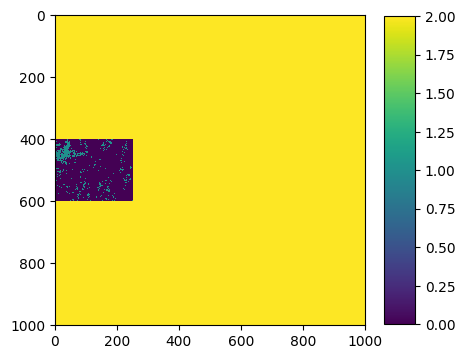
- Size of the image:
- Rows (height): 1000
- Cols (width): 1000
- Bands: 1
- Spatial resolution: 10.0 meters / degree (depending on projection system)
- Central point latitude - longitude coordinates: (7.04099599, 38.39058840)
- Driver: GTiff
- Data type: uint8
- Projection system: EPSG:32637
- Nodata: 2.0
- Given names for spectral bands:
{'1': 1}
Here, we have 3 labels : 0,1,2:
0 corresponds to bare soils
1 corresponds to vegetation
2 corresponds to no data
We then have to extract only labels with 0 and 1 for the training (and not care with label 2).
To do this, we have the function rastereasy.extract_numpy_tables
4) Extract two numpy that are required in a scikit ML technique
scikitrequires (X,y) numpy tables:
Xbeing the data, of size(N x f)(N: number of data andf: number of features)ybeing the outputs, of size(N,)that contains the outputs (values, name of the class, …)
help(rastereasy.extract_numpy_tables)
Help on function extract_numpy_tables in module rastereasy.rastereasy:
extract_numpy_tables(data, outputs, label=None)
Extract paired NumPy tables (features and outputs) for machine learning.
This function converts raster data stored in `Geoimage` objects into two
NumPy arrays: one containing the input features (X), and one containing
the corresponding outputs/labels (y). Optionally, it can filter the
dataset to only include samples corresponding to one or multiple label
values.
Parameters
----------
data : Geoimage
A `rastereasy.Geoimage` containing the input features
(e.g., multispectral bands).
outputs : Geoimage
A `rastereasy.Geoimage` containing the outputs/labels
(e.g., classes or quantitative values).
label : int or list of int, optional (default=None)
If provided, only the samples corresponding to this label value
(or list of values) in `outputs` will be extracted.
Returns
-------
X : numpy.ndarray
Input feature table of shape (N, f), where
N is the number of extracted samples and
f is the number of features (bands).
y : numpy.ndarray
Output array of shape (N, ), containing the labels/outputs
associated with each sample.
Examples
--------
>>> # Extract all data/labels from two Geoimages
>>> X, y = extract_numpy_tables(data, labels)
>>> # Extract only the samples where label == 1
>>> X, y = extract_numpy_tables(data, outputs, label=1)
>>> # Extract only the samples with labels in [1, 3, 5]
>>> X, y = extract_numpy_tables(data, outputs, label=[1, 3, 5])
# We are interested in labels 0 and 1 for training
X,y=rastereasy.extract_numpy_tables(im_features_std, ground_truth, label=[0,1])
print(X.shape)
print(y.shape)
(50000, 17)
(50000,)
5) Train our favorite ML algorithm
Now we can apply a ML algorithm on data. Here we use a random forest
Training
from sklearn.ensemble import RandomForestClassifier
clf = RandomForestClassifier(max_depth=2, random_state=0)
clf.fit(X, y)
RandomForestClassifier(max_depth=2, random_state=0)In a Jupyter environment, please rerun this cell to show the HTML representation or trust the notebook.
On GitHub, the HTML representation is unable to render, please try loading this page with nbviewer.org.
Parameters
| n_estimators | 100 | |
| criterion | 'gini' | |
| max_depth | 2 | |
| min_samples_split | 2 | |
| min_samples_leaf | 1 | |
| min_weight_fraction_leaf | 0.0 | |
| max_features | 'sqrt' | |
| max_leaf_nodes | None | |
| min_impurity_decrease | 0.0 | |
| bootstrap | True | |
| oob_score | False | |
| n_jobs | None | |
| random_state | 0 | |
| verbose | 0 | |
| warm_start | False | |
| class_weight | None | |
| ccp_alpha | 0.0 | |
| max_samples | None | |
| monotonic_cst | None |
6) Apply our favorite ML algorithm on a Geoimage
To apply the trained model on a Geoimage, we have the fonction predict
help(im_features_std.predict)
Help on method predict in module rastereasy.rastereasy:
predict(model, bands=None) method of rastereasy.rastereasy.Geoimage instance
Apply a pre-trained machine learning model to the image.
This method applies a machine learning model (such as one created by kmeans())
to the image data, creating a new classified or transformed image.
Parameters
----------
model : scikit model or tuple
If tuple, it must containi (ml_model, scaler) where:
- ml_model: A trained scikit-learn model with a predict() method
- scaler: The scaler used for standardization (or None if not used)
bands : list of str or None, optional
List of bands to use as input for the model. If None, all bands are used.
Default is None.
Returns
-------
Geoimage
A new Geoimage containing the model output
Examples
--------
>>> # Train a model on one image and apply to another
>>> classified, model = reference_image.kmeans(n_clusters=5)
>>> new_classified = target_image.predict(model)
>>> new_classified.visu(colorbar=True, cmap='viridis')
>>>
>>> # Train on specific bands and apply to the same bands
>>> _, model = image.kmeans(bands=["NIR", "Red"], n_clusters=3)
>>> result = image.predict(model, bands=["NIR", "Red"])
>>> result.save("classified.tif")
>>>
>>> # Apply a RF model trained of other data to a Geoimage
>>> from sklearn.ensemble import RandomForestClassifier
>>> clf = RandomForestClassifier(max_depth=2, random_state=0)
>>> clf.fit(X, y)
>>> result = image.predict(clf)
Notes
-----
- The model must have been trained on data with the same structure as what it's being applied to (e.g., same number of bands)
- If a scaler was used during training, it will be applied before prediction
- This method is useful for:
- Applying a classification model to new images
- Ensuring consistent classification across multiple scenes
- Time-series analysis with consistent classification
# As we can see in the help, we can apply it directly on the image with standardized bands
vegetation = im_features_std.predict(clf)
vegetation.visu()
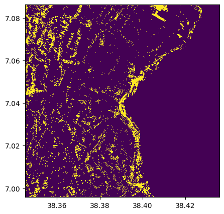
# We can apply it directly on the image without standardized bands, and give the scaler issued from standardization
vegetation = im_features.predict((clf,scaler))
vegetation.visu()